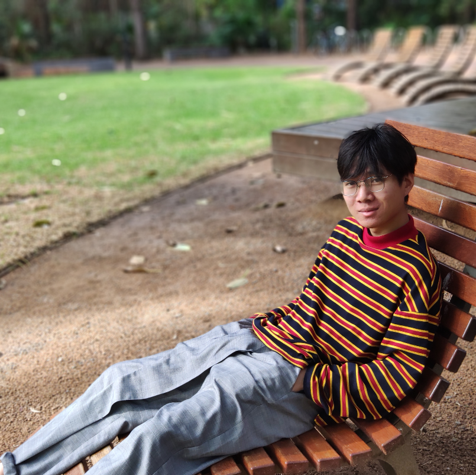

Zhengquan Li
Ph.D. Candidate, Computer and Information Science
University of Michigan–Dearborn
zqli AT umich DOT edu
About Me
I am a Ph.D. candidate in the Department of Computer and Information Science
at the University of Michigan–Dearborn.
I previously received a double master’s degree in Computer Science
from the CCNU–UOW Joint Institute.
My current research interests lie in distributed computing, with a focus on building systems that help
software developers create performance-optimal applications.
News
- Our paper was accepted to IEEE Transactions on Services Computing (TSC)!
- Our paper was accepted to ACM/IFIP Middleware 2025!
-
Received the prestigious
Rackham Predoctoral Fellowship
!
Social media spotlight
- Our paper was accepted to IEEE ICDCS 2024 and received the Distinguished Paper Award!
-
Tailored Homogeneous Service Composition at Runtime to Enhance User-Perceived Performance
[paper]
Zhengquan Li, Zheng Song.
IEEE Transactions on Services Computing, 2025, SJR Q1.
-
Always-On, Always-Mine: Federated Recommendation Systems on Personal Home Routers
[paper]
Zhengquan Li, Myungjin Lee, and Zheng Song.
ACM/IFIP Middleware, 2025, Core Ranking A.
-
Edge Cache on WiFi Access Points: Millisecond-Level App Latency Almost for Free
[paper]
Zhengquan Li, Summit Shrestha, Zheng Song, and Eli Tilevich.
IEEE ICDCS, 2024, Core Ranking A (Distinguished Paper Award).
-
Client-Specific Homogeneous Service Composition at Runtime for QoS-Critical Tasks
[paper]
Zhengquan Li, Long Cheng, and Zheng Song.
ICSOC, 2024 (Short Paper; Acceptance rate for full + short papers: 22%, Core Ranking A).
Teaching
-
Independent Instructor, CIS 200 II: Computer Science Introduction, UM–Dearborn.
[Teaching Evaluation]
Topics: Unix, C++, testing, abstraction, OOD, ADTs, templates, recursion.
-
Guest Lecturer (3 sessions), CIS 489: Edge Computing, UM–Dearborn.
Topics included AWS IoT tutorial, federated learning, and
hands-on exercises on distributed edge intelligence.
-
Teaching Assistant, CIS 427: Computer Networks and
CIS 450/ECE 478: Operating Systems.
Service
-
Reviewer or external reviewer for multiple conferences and journals, including
WWW 2025, ICSC 2025, ICSOC 2024, MEDES 2024, ICCCN 2024,
IEEE Transactions on Mobile Computing, and
IEEE Transactions on Services Computing.
Awards and Honors
- 2025 Pre-doctoral Fellowship, Rackham Graduate School, University of Michigan
- 2025 Ph.D. Honor Scholar Award, University of Michigan–Dearborn (one per department)
- 2024 IEEE ICDCS Distinguished Paper Award
- 2024 IEEE ICDCS NSF Travel Grant
- 2018–2020 University of Wollongong Master Scholarship (Tuition Free)